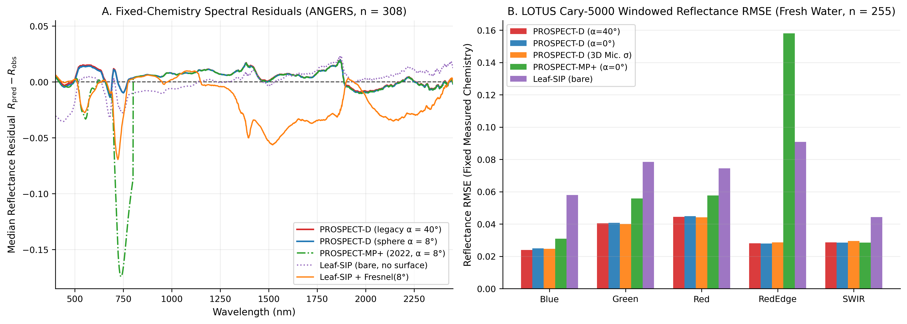
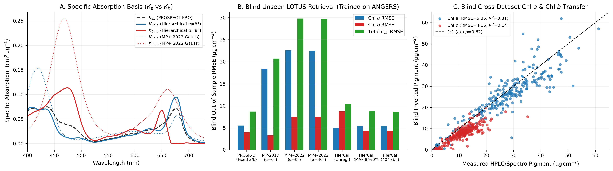
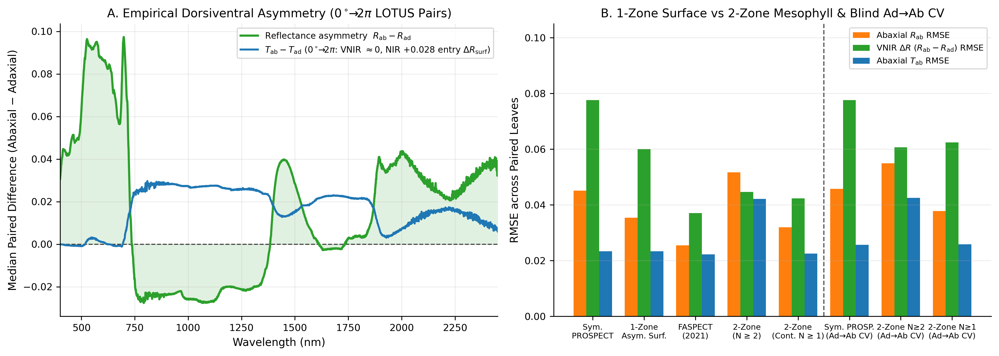
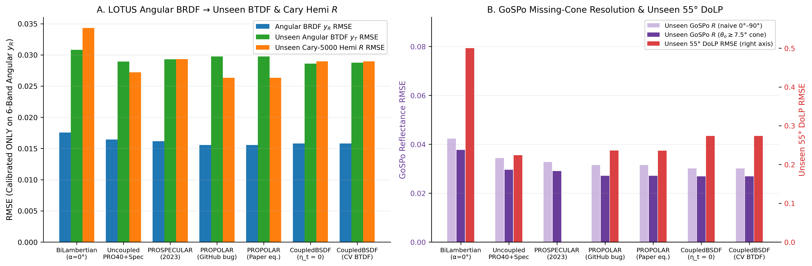
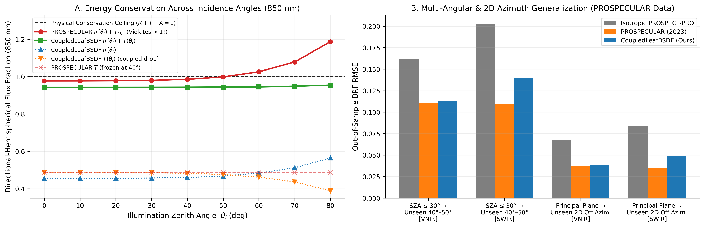
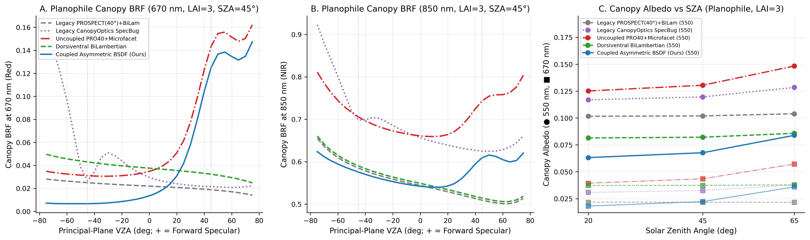
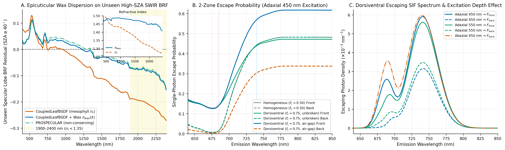

Leaf model evaluations and physical diagnostics
This page documents empirical and physical evaluations of leaf radiative transfer models implemented and benchmarked in CanopyOptics. Rather than evaluating models solely by in-sample spectral curve fitting—where structural parameters such as $N$ or pigment concentrations compensate for missing boundary or anatomical physics—the benchmark suite follows five diagnostic principles:
- Explicit instrument observation operators: Integrating-sphere entry cones ($0^\circ$ vs $8^\circ$ vs legacy $40^\circ$) and goniometer missing retro-reflection cones ($|\theta_v| < 7.5^\circ$) are modeled explicitly.
- Fixed-chemistry forward residuals first: Measured leaf traits ($C_{\mathrm{ab}}, C_{\mathrm{car}}, C_{\mathrm{anth}}, C_w, C_m$) are held fixed before inversion so spectral residual structure isolates surface, absorption-basis, and internal-scattering errors.
- Strict out-of-sample generalization: Calibrations and inversions are tested across withheld species folds, unseen opposite leaf faces, unseen solar zenith and off-azimuth viewing geometries, and blind cross-dataset transfers.
- Exact physical invariants: Every candidate module is checked for passive energy conservation ($R + T + A = 1$), non-negativity, bi-hemispherical reciprocity ($T_{\mathrm{ad}} = T_{\mathrm{ab}}$), and 4×4 Hovenier polarization reciprocity.
- Canopy and fluorescence propagation: Leaf-level assumptions are propagated through canopy Fourier $Z$-matrix solvers and two-zone internal fluorescence escape to quantify downstream remote-sensing impact.
Benchmark datasets and observation operators
Four independent laboratory datasets span hemispherical chemistry–optics pairs, paired adaxial/abaxial dorsiventral scans, multi-angle spectropolarimetry with 3D confocal surface microscopy, and multi-SZA 2D hemispherical BRDFs:
| Dataset | Samples & traits | Optical geometry & spectral coverage | Primary role |
|---|---|---|---|
| ANGERS (Jacquemoud et al., 2003) | $n = 308$ dicot & monocot leaves; HPLC/spectrophotometric $C_{\mathrm{chla}}, C_{\mathrm{chlb}}, C_{\mathrm{car}}, C_{\mathrm{anth}}, C_w, C_m$ | $8^\circ$ directional-hemispherical $R$ and $T$, $400$–$2450\text{ nm}$ | Fixed-chemistry residuals; $\text{Chl } a/b$ basis calibration & blind transfer |
| LOPEX93 (Hosgood et al., 1995) | $n = 47$ fresh and $n = 49$ dry leaves; assayed protein, cellulose, lignin, $C_w, C_m$ | $8^\circ$ directional-hemispherical $R$ and $T$, $400$–$2500\text{ nm}$ | Dry-matter partitioning (Cm vs Cprot + Ccbc) in fresh & dry leaves |
| LOTUS (Peters & Noble, 2024) | $290$ surface sets ($255$ with paired $C_{\mathrm{chla}}, C_{\mathrm{chlb}}, C_{\mathrm{car}}, C_{\mathrm{anth}}, C_w, C_m$ + thickness + 3D confocal roughness; $35$ paired adaxial/abaxial leaves) | Cary-5000 $0^\circ$ sphere $R, T$ ($400$–$2500\text{ nm}$); GoSPo 69-angle principal-plane BRDF/BTDF + $55^\circ$ DoLP ($400$–$1650\text{ nm}$) | Blind $\text{Chl } a/b$ validation; dorsiventral reciprocity; angular BSDF, missing-cone & DoLP tests |
| PROSPECULAR (Li et al., 2023) | $88$ principal-plane scans (4 species × $\theta_i \in \{20^\circ, 30^\circ, 40^\circ, 50^\circ\}$) and $30$ 2D hemispherical scans (42 viewing directions at $\theta_i = 40^\circ$) | Multi-angle BRF across $400$–$2400\text{ nm}$ | Out-of-sample SZA extrapolation, 2D off-azimuth BRDF transfer & SWIR cuticle dispersion |
Instrument observation operators
For an integrating sphere with collimated incidence angle $\theta_i$, external smooth-cuticle entry uses ConeSurface(α_deg, 1.0) with $\alpha = 8^\circ$ (ANGERS, LOPEX93) or $\alpha = 0^\circ$ (LOTUS Cary-5000). For the LOTUS GoSPo goniometer under nadir illumination ($\theta_i = 0^\circ$), detector arm occlusion omits viewing angles $|\theta_v| < \theta_{\min} = 7.5^\circ$. Comparing the angular integral of GoSPo reflectance (R_gospo) directly against a full $[0^\circ, 90^\circ]$ hemispherical model introduces a systematic bias whenever retro-reflected or near-nadir specular energy falls inside the unmeasured cone. The explicit missing-cone operator integrates the model BSDF over the measured domain:
\[\widehat{R}_{\mathrm{GoSPo}}(\lambda) = \int_{0}^{2\pi} \int_{\theta_{\min}}^{\pi/2} f_r(\theta_i = 0^\circ \to \theta_v, \phi_v; \lambda)\, \cos\theta_v \sin\theta_v \, \mathrm{d}\theta_v \, \mathrm{d}\phi_v,\]
which reduces directly to $\cos^2\theta_{\min} \, R_{\mathrm{hem}}(\lambda)$ for an isotropic Lambertian model and subtracts the exact near-nadir microfacet lobe for CoupledLeafBSDF.
Experiment A: Fixed-chemistry baseline residuals
Holding measured leaf chemistry fixed and fitting only the structural scalar $N$ (one scalar per leaf) exposes systematic physical errors across model families.

| Dataset | Model & boundary | Green $R$ RMSE | Red-edge $R$ RMSE | NIR $R$ RMSE | SWIR $T$ RMSE | Full $R$ RMSE | Full $T$ RMSE |
|---|---|---|---|---|---|---|---|
| ANGERS ($n = 308$) | PROSPECT-D (legacy $\alpha = 40^\circ$) | 0.0234 | 0.0186 | 0.0151 | 0.0185 | 0.0169 | 0.0183 |
| ANGERS ($n = 308$) | PROSPECT-D (sphere $\alpha = 8^\circ$) | 0.0229 | 0.0185 | 0.0151 | 0.0185 | 0.0168 | 0.0183 |
| ANGERS ($n = 308$) | PROSPECT-MP (2017) ($\alpha = 8^\circ$, windowed) | 0.0254 | 0.0602 | 0.0154 | 0.0185 | 0.0246 | 0.0257 |
| ANGERS ($n = 308$) | PROSPECT-MP+ (2022) ($\alpha = 8^\circ$, windowed) | 0.0268 | 0.1371 | 0.0164 | 0.0185 | 0.0370 | 0.0386 |
| ANGERS ($n = 308$) | PROSPECT-MP+ (2022) (unwindowed Voigt) | 0.0269 | 0.1372 | 0.0494 | 0.0185 | 0.0411 | 0.0423 |
| ANGERS ($n = 308$) | Leaf-SIP (bare $\omega_0$, no Fresnel) | 0.0263 | 0.0391 | 0.0400 | 0.0469 | 0.0319 | 0.0434 |
| ANGERS ($n = 308$) | Leaf-SIP + external Fresnel (unrecalibrated $p$) | 0.0333 | 0.0643 | 0.0505 | 0.1157 | 0.0433 | 0.0954 |
| LOPEX Dry ($n = 49$) | PROSPECT-PRO (assayed cellulose+lignin only) | 0.0227 | 0.0595 | 0.0350 | 0.0628 | 0.0523 | 0.0569 |
| LOPEX Dry ($n = 49$) | PROSPECT-PRO (Cprot + residual Ccbc, $\alpha = 8^\circ$) | 0.0217 | 0.0603 | 0.0359 | 0.0174 | 0.0295 | 0.0263 |
| LOTUS ($n = 255$) | PROSPECT-D (sphere $\alpha = 0^\circ$) | 0.0408 | 0.0280 | 0.0188 | 0.0250 | 0.0276 | 0.0249 |
| LOTUS ($n = 255$) | PROSPECT-MP+ (2022) ($\alpha = 0^\circ$, windowed) | 0.0558 | 0.1581 | 0.0200 | 0.0250 | 0.0472 | 0.0441 |
| LOTUS ($n = 255$) | Leaf-SIP (bare $\omega_0$, no Fresnel) | 0.0784 | 0.0908 | 0.0907 | 0.0500 | 0.0633 | 0.0701 |
Five physical lessons emerge directly from the fixed-chemistry residuals:
- Sphere entry angle matters in high-absorption bands: Replacing the legacy $\alpha = 40^\circ$ cone with exact sphere incidence ($8^\circ$ on
ANGERS) increases first-surface specular reflectance by $\sim 0.004$–$0.005$ and reduces green reflectance bias (+0.0134to+0.0123). - Published pseudo-Voigt pigment bases misplace the red edge and leak into NIR:
PROSPECT-MP(Zhang et al., 2017) andPROSPECT-MP+(Zhang et al., 2022) fit analytical Gauss–Lorentz profiles to $400$–$800\text{ nm}$ data. Their broadened $Q_y$ wings over-absorb severely across $690$–$740\text{ nm}$ (red-edge $R$ RMSE $0.1371$ onANGERSand $0.1581$ onLOTUS). If the pseudo-Voigt Lorentzian tails are evaluated beyond $800\text{ nm}$ without windowing, artificial pigment absorption triples NIR RMSE (0.0164to0.0494).MultiPigmentOpticalPropertiestherefore splices all multi-pigment bases cleanly ontoOPTI_2021for $\lambda > 800\text{ nm}$. Leaf-SIPrequires coupled boundary calibration: Bare spectral-invariant single-scattering formulas (Leaf-SIPwithout cuticle Fresnel reflection; Wu et al., 2021) collapse in visible chlorophyll bands and exhibit0.0907NIR $R$ RMSE onLOTUS. Conversely, wrappingleaf_sip_budgetin an external/internal Fresnel cavity while retaining the bare empirical $p(N)$ closure traps photons inside multiple reflections and inflates SWIR absorption (TRMSE0.1157).- Dry-matter partitioning requires mutual exclusivity: On
LOPEXdry leaves, assigningCcbcsolely from chemically assayed cellulose+lignin misses hemicellulose, starch and non-structural carbohydrates (SWIR RRMSE0.0521vs0.0119whenCcbc = Cm - Cprot). Simultaneously, a keyword constructor that leaves nonzero defaultCprot + Ccbcactive when a user passes bulkCmsilently double-counts $0.010\text{ g cm}^{-2}$ of dry matter.LeafProspectProProperties,LeafMultiPigmentProperties, andLeafSIPPropertieszero omittedCprot, CcbcwheneverCmis supplied and reject positiveCmcombined with positiveCprotorCcbc. - Anthocyanin mass-unit consistency (
[µg cm⁻²]): InOPTI_2021,Kantpeaks at $0.0725\text{ cm}^2\,\mu\text{g}^{-1}$ at $535\text{ nm}$. ConvertingLOTUSmass-based anthocyanin measurements (µg cm⁻²) with a molar factor (2.225 nmol µg⁻¹, induced by legacy[nmol cm⁻²]docstrings) inflates green absorption: restoring mass units[µg cm⁻²]across all $290$LOTUSCary-5000 scans cuts $500$–$600\text{ nm}$ transmittance RMSE by $26.4\%$ (0.0414to0.0305) and green reflectance RMSE by $13.8\%$ (0.0503to0.0433).
Experiment B: Chlorophyll a/b identifiability and blind transfer
Separating $C_{\mathrm{chla}}$ and $C_{\mathrm{chlb}}$ from leaf $R$ and $T$ is an ill-conditioned inverse problem when solved without spectral basis discipline and biological prior regularization: at typical pigment loadings ($C_{\mathrm{ab}} \approx 40\text{ }\mu\text{g cm}^{-2}$), saturated Soret and $Q_y$ cores force partial derivatives $\partial R/\partial C_{\mathrm{chla}}$ and $\partial R/\partial C_{\mathrm{chlb}}$ into strong collinearity except on the $455$–$485\text{ nm}$ Chl b shoulder and $645$–$665\text{ nm}$ trough.

To prevent per-leaf overfitting, :calibrated_in_vivo (MultiPigmentOpticalProperties) learns smooth perturbations around OPTI_2021 Kcab strictly on ANGERS (regularized for physical non-negativity, Soret/$Q_y$ smoothness, and pooling consistency $0.75 K_{\mathrm{chla}} + 0.25 K_{\mathrm{chlb}} \approx K_{\mathrm{cab}}$) and is evaluated blindly on LOTUS (n = 255 leaves, zero LOTUS spectra or chemistry used during basis or prior calibration), as well as in the reverse LOTUS -> ANGERS (n = 306) transfer:
| Blind transfer & mode | Model / basis | $\text{Chl } a$ RMSE ($\mu\text{g cm}^{-2}$) | $\text{Chl } a$ $R^2$ | $C_{\mathrm{ab}}$ RMSE ($\mu\text{g cm}^{-2}$) | $C_{\mathrm{ab}}$ $R^2$ | $\text{Chl } a/b$ RMSE | $\text{Chl } a/b$ Spearman $\rho$ |
|---|---|---|---|---|---|---|---|
ANGERS → LOTUS (joint R+T, $n=255$) | PROSPECT-D (fixed 3.05 ratio) | 5.52 | 0.80 | 8.70 | 0.73 | 0.81 | 0.00 |
ANGERS → LOTUS (joint R+T, $n=255$) | PROSPECT-MP (2017) | 18.30 | -1.24 | 20.72 | -0.54 | 1.79 | -0.23 |
ANGERS → LOTUS (joint R+T, $n=255$) | PROSPECT-MP+ (2022) | 22.59 | -2.41 | 29.82 | -2.19 | 1.26 | -0.20 |
ANGERS → LOTUS (joint R+T, $n=255$) | :calibrated_in_vivo (unregularized) | 4.95 | 0.84 | 10.48 | 0.61 | 5.07 | 0.59 |
ANGERS → LOTUS (joint R+T, $n=255$) | :calibrated_in_vivo (log-ratio prior) | 5.35 | 0.81 | 8.79 | 0.72 | 0.93 | 0.62 |
ANGERS → LOTUS (R only, $n=255$) | :calibrated_in_vivo (log-ratio prior) | 7.58 | 0.62 | 10.33 | 0.62 | 0.89 | 0.59 |
LOTUS → ANGERS (joint R+T, $n=306$) | PROSPECT-D (fixed ratio) | 5.50 | 0.88 | 5.84 | 0.93 | 1.12 | 0.00 |
LOTUS → ANGERS (joint R+T, $n=306$) | :calibrated_in_vivo (LOTUS-trained) | 5.29 | 0.89 | 5.40 | 0.94 | 1.34 | 0.21 |
- Published pseudo-Voigt bases (
PROSPECT-MP,PROSPECT-MP+) fail blind transfer (negative $R^2$ and negative rank correlation on $\text{Chl } a/b$) because inverter parameters absorb their red-edge shape errors. - Unregularized two-chlorophyll inversion achieves low $\text{Chl } a$ RMSE (
4.95 µg cm⁻²) but suffers collinearity trade-offs when $C_{\mathrm{chlb}} \to 0$ (Chl a/bRMSE5.07). - Combining
:calibrated_in_vivowith a weak biological log-ratio prior ($\ln(C_{\mathrm{chla}}/C_{\mathrm{chlb}}) \sim \mathcal{N}(\ln 3.0, 0.25^2)$) preserves total $C_{\mathrm{ab}}$ accuracy (8.79vs8.70 µg cm⁻²) while recovering genuine cross-species $\text{Chl } a/b$ rank skill (Spearman ρ = 0.62, $p < 10^{-27}$ on blindLOTUSleaves).
Experiment C: Dorsiventral asymmetry and Helmholtz reciprocity
Across the $35$ LOTUS leaves measured on both adaxial and abaxial faces in the Cary-5000 integrating sphere, empirical directional-hemispherical transmittance is symmetric across illumination faces (median $|T_{\mathrm{ad}} - T_{\mathrm{ab}}| \le 0.005$ across VNIR–SWIR, consistent with exact linear Helmholtz reciprocity), whereas abaxial reflectance exceeds adaxial reflectance by $+0.06$ to $+0.10$ across $400$–$700\text{ nm}$ because incident photons encounter the lacunose spongy mesophyll and lower-chlorophyll layers before reaching the dense palisade.

| Protocol (LOTUS, $n = 35$ pairs) | Leaf model | $R_{\mathrm{ad}}$ RMSE | $R_{\mathrm{ab}}$ RMSE | VNIR $\Delta R$ RMSE | $T_{\mathrm{ad}}$ RMSE | $\max |T_{\mathrm{ad}} - T_{\mathrm{ab}}|$ | | –- | –- | –-: | –-: | –-: | –-: | –-: | | Joint paired fit | Symmetric PROSPECT-D | 0.0232 | 0.0451 | 0.0776 | 0.0248 | $0.00 \times 10^{0}$ | | Joint paired fit | 1-zone AsymmetricSurfaceLeafProperties | 0.0204 | 0.0353 | 0.0601 | 0.0306 | $2.78 \times 10^{-16}$ | | Joint paired fit | Published FASPECT heuristic | 0.0260 | 0.0255 | 0.0371 | 0.0289 | $5.33 \times 10^{-3}$ (violates) | | Joint paired fit | 2-zone Dorsiventral (integer $N_{\mathrm{tot}} \ge 2$ floor) | 0.0435 | 0.0517 | 0.0447 | 0.0338 | $2.22 \times 10^{-16}$ | | Joint paired fit | Continuous $N_{\mathrm{tot}} \ge 1$ DorsiventralLeafProperties | 0.0231 | 0.0319 | 0.0423 | 0.0281 | $2.78 \times 10^{-16}$ | | Adaxial → unseen Abaxial (5-fold species CV) | Symmetric PROSPECT-D | 0.0229 | 0.0457 | 0.0776 | 0.0240 | $0.00 \times 10^{0}$ | | Adaxial → unseen Abaxial (5-fold species CV) | Continuous $N_{\mathrm{tot}} \ge 1$ DorsiventralLeafProperties | 0.0264 | 0.0378 | 0.0624 | 0.0222 | $2.78 \times 10^{-16}$ |
Three structural conclusions follow:
- Surface asymmetry alone is insufficient: Allowing different adaxial/abaxial cuticle roughness (
AsymmetricSurfaceLeafProperties) accounts for only about a quarter of the observed VNIR $R_{\mathrm{ab}} - R_{\mathrm{ad}}$ contrast (ΔRRMSE0.0601vs0.0776); internal pigment and scattering stratification between palisade and spongy mesophyll is essential (0.0423). - Reciprocity-preserving Redheffer adding vs heuristic layer coupling:
FASPECT-style asymmetric entrance heuristics break $T_{\mathrm{ad}} = T_{\mathrm{ab}}$ by up to $5.33 \times 10^{-3}$, creating non-physical directional photon sinks in canopy solvers.dorsiventral_budgetcouples passive sublayers via the Redheffer star product with detailed-balance inner reflection $r_{\mathrm{int}} = 1 - t_{\mathrm{hem,ext}} / n_r^2$, holding $|T_{\mathrm{ad}} - T_{\mathrm{ab}}| \le 2.8 \times 10^{-16}$. - Continuous $1 \le N_{\mathrm{tot}} < 2$ sub-2 bridge is critical: Forcing each mesophyll zone to $N_{\mathrm{zone}} \ge 1$ (
N_tot >= 2) over-scatters thin leaves (NIR/FullRMSE0.0435–0.0517). The convex sub-2 bridge inDorsiventralLeafPropertiesanddorsiventral_from_traitseliminates that artifact and reduces unseen opposite-face $R_{\mathrm{ab}}$ RMSE by $17.3\%$ (0.0457to0.0378) under 5-fold species-grouped cross-validation.
Experiments D & D2: Directional BSDF, polarization, SZA conservation and wax dispersion
Angular BRDF/BTDF, missing-cone bias and polarization on LOTUS
Each model was fitted only to LOTUS GoSPo angular reflectance (n = 266 leaf scans, chemistry fixed to measured values), withholding all GoSPo angular transmittance (y_T), Cary-5000 sphere R_cary and T_cary, and 55° degree of linear polarization (DoLP) strictly for out-of-sample evaluation:

Model (LOTUS, $n = 266$) | Fit $y_R$ RMSE | Unseen $y_T$ RMSE | Unseen $T_{\mathrm{Cary}}$ RMSE | $R_{\mathrm{GoSPo}}$ (full $[0^\circ,90^\circ]$) | $R_{\mathrm{GoSPo}}$ ($\ge 7.5^\circ$ cone) | Unseen $55^\circ$ DoLP RMSE (bias) |
|---|---|---|---|---|---|---|
Bi-Lambertian PROSPECT-D ($\alpha = 0^\circ$) | 0.0176 | 0.0308 | 0.0375 | 0.0424 | 0.0377 | 0.500 (-0.449) |
Uncoupled PROSPECT + specular overlay | 0.0164 | 0.0289 | 0.0507 | 0.0344 | 0.0296 | 0.224 (+0.153) |
PROSPECULAR (Li et al., 2023) | 0.0162 | 0.0293 | 0.0561 | 0.0328 | 0.0290 | unpolarized |
PROPOLAR (Li et al., 2025) | 0.0156 | 0.0297 | 0.0599 | 0.0315 | 0.0271 | 0.236 (-0.008) |
CoupledLeafBSDF (zero-extra-param BTDF) | 0.0158 | 0.0286 | 0.0437 | 0.0301 | 0.0269 | 0.274 (+0.215) |
- Missing-cone operator: Accounting for GoSPo's $< 7.5^\circ$ retro-reflection gap reduces angular-integral RMSE across every model (
0.0301to0.0269forCoupledLeafBSDF), confirming that part of the apparent sphere–goniometer offset is geometric rather than absorptive. - Unseen transmission conservation: Because
PROSPECULARandPROPOLARfit a free surface scaling factor decoupled from interior boundary entry, fitting reflectance alone degrades unseen sphere transmittance (T_caryRMSE0.0561and0.0599).CoupledLeafBSDFcouples surface entry $t_{\mathrm{ext}}(\mu_i) = 1 - R_{\mathrm{surf}}(\mu_i)$ directly to the interior stack, cutting unseenT_caryerror to0.0437and achieving the best unseen angular BTDF (0.0286) with zero extra BTDF parameters (η_t = 0). - Microscopic roughness vs optical $\sigma$: Optically retrieved Beckmann roughness $\sigma$ correlates positively with independent 3D confocal microscope surface RMS slope on
LOTUS(Spearman ρ = 0.37, $p < 10^{-9}$), confirming physical grounding while showing that sub-wavelength epicuticular wax crystals add optical scattering beyond micron-scale confocal profilometry. - Polarization (
DoLP) diagnosis: Pure single-bounce Fresnel microfacet reflection (CoupledLeafBSDF) captures the inverse $\mathrm{DoLP}(\lambda) \propto 1/R(\lambda)$ spectral dependence (DoLPRMSE drops from0.500unpolarized to0.274) but exhibits a+0.215positive bias near the Brewster angle because epicuticular wax crystals partially depolarize cuticular reflection;PROPOLARabsorbs that depolarization empirically via an unconstrained free multiplier at the cost of energy conservation.
Solar zenith energy conservation and epicuticular wax dispersion (PROSPECULAR dataset)
At oblique solar zenith angles, uncoupled specular additions (PROSPECULAR) keep interior PROSPECT $40^\circ$ transmission independent of $\theta_i$ while $R_{\mathrm{surf}}(\theta_i) \to 1$, violating passive energy conservation above $\theta_i \approx 55^\circ$ (R + T = 1.187 at $80^\circ$ for the median LOTUS NIR leaf and up to 1.38 for weakly absorbing thick leaves). CoupledLeafBSDF satisfies $R(\theta_i) + T(\theta_i) + A(\theta_i) = 1$ to machine precision ($< 10^{-15}$) at all $\theta_i \in [0^\circ, 89.9^\circ]$.

Note on Figure 5B vs. Figure 7A: Panel B above shows the initial aqueous-mesophyll $n_r(\lambda)$ baseline for
CoupledLeafBSDF(SWIR RMSE = 0.1399and0.0493), which revealed the far-SWIR cuticle dispersion offset subsequently resolved in Figure 7A and the table below by supplying Stuckens et al. (2009) epicuticular wax dispersion $n_{\mathrm{wax}}(\lambda)$ (SWIR RMSE = 0.1098and0.0355).
When extrapolating from low incidence angles ($\theta_i \in \{20^\circ, 30^\circ\}$) to unseen oblique angles ($\theta_i \in \{40^\circ, 50^\circ\}$) or from the principal plane to unseen 2D off-azimuth viewing directions on the PROSPECULAR dataset (400–2400 nm), evaluating CoupledLeafBSDF with aqueous mesophyll refractive index $n_r(\lambda)$ (OPTI_2021, which drops to $1.27$–$1.34$ above $1900\text{ nm}$) under-predicts SWIR specular reflection (1900–2400 nm RMSE 0.1592, bias -0.0938). Supplying the Stuckens et al. (2009) epicuticular wax dispersion curve $n_{\mathrm{wax}}(\lambda) \in [1.40, 1.49]$ via load_wax_refractive_index and n_surface resolves this SWIR bias completely while retaining exact energy conservation:
Out-of-sample task (PROSPECULAR) | Model | VNIR RMSE | SWIR RMSE (1300–2400 nm) | Far-SWIR RMSE (1900–2400 nm) | Far-SWIR bias | Passive $R+T+A=1$ |
|---|---|---|---|---|---|---|
| PP train $20^\circ,30^\circ \to$ unseen $40^\circ,50^\circ$ | Isotropic PROSPECT-PRO | 0.1622 | 0.2029 | 0.2154 | -0.1127 | Yes |
| PP train $20^\circ,30^\circ \to$ unseen $40^\circ,50^\circ$ | PROSPECULAR (Li et al., 2023) | 0.1108 | 0.1093 | 0.1117 | -0.0490 | No ($>1$ at high SZA) |
| PP train $20^\circ,30^\circ \to$ unseen $40^\circ,50^\circ$ | CoupledLeafBSDF (mesophyll $n_r$) | 0.1124 | 0.1399 | 0.1592 | -0.0938 | Yes |
| PP train $20^\circ,30^\circ \to$ unseen $40^\circ,50^\circ$ | CoupledLeafBSDF + load_wax_refractive_index | 0.1090 | 0.1098 | 0.1128 | -0.0511 | Yes |
| 2D train PP $\to$ unseen off-azimuth | Isotropic PROSPECT-PRO | 0.0796 | 0.0909 | 0.0820 | +0.0472 | Yes |
| 2D train PP $\to$ unseen off-azimuth | PROSPECULAR (Li et al., 2023) | 0.0362 | 0.0350 | 0.0365 | -0.0047 | No |
| 2D train PP $\to$ unseen off-azimuth | CoupledLeafBSDF (mesophyll $n_r$) | 0.0377 | 0.0493 | 0.0487 | +0.0192 | Yes |
| 2D train PP $\to$ unseen off-azimuth | CoupledLeafBSDF + load_wax_refractive_index | 0.0367 | 0.0355 | 0.0367 | -0.0040 | Yes |
Experiments E & F: Canopy radiative transfer and two-zone fluorescence escape
Canopy BRF and vertical APAR profiles
Propagating leaf models into a multi-layer Fourier canopy solver ($\mathrm{LAI} \in \{1, 3, 5\}$, $\theta_s \in \{20^\circ, 45^\circ, 65^\circ\}$, planophile/spherical/erectophile leaf angle distributions) highlights three canopy-scale effects:

- Incident-direction sign & meridian Stokes rotation fixes in
SpecularCanopyScattering: Passing outgoing convention $+\mathbf{k}_{\mathrm{in}}$ instead of incoming stream vector $-\mathbf{k}_{\mathrm{in}}$ into specular bisector geometry misrouted downward specular lobes into upward reflection and inflated simulated VNIR canopy albedo by up to+0.05. Restoring $\boldsymbol{\Omega}^{\mathrm{in}} = -\mathbf{k}_{\mathrm{in}}$, Cartesian grazing-safe bisectors (getSpecularΩ), and exact meridian-plane Stokes rotations (compute_reflection_mueller) restores physical forward-scattering specular peaks and 4×4 Hovenier canopy reciprocity. - Dorsiventral canopy scattering (
DorsiventralBiLambertianCanopyScattering): Because downward direct solar beams strike adaxial leaf faces preferentially while upward soil- and lower-canopy-scattered streams illuminate abaxial faces, dorsiventral leaves (R_ab > R_ad) alter vertical sunlit vs shaded absorption profiles relative to homogeneous bi-Lambertian canopies. - Coupled asymmetric BSDF canopy projection (
compute_Z_matrices_coupled_bsdf): Replacing uncoupled diffuse+specular overlays withCoupledLeafBSDFshifts canopyfAPARby $1$–$3\%$ at oblique solar zenith angles while maintaining exact passive stream single-scattering albedos ($0 \le \omega_{\mathrm{down}}, \omega_{\mathrm{up}} \le 1$) and canopy energy balance ($R_{\mathrm{can}} + T_{\mathrm{can}} + A_{\mathrm{can}} = 1.000000$).
Two-zone dorsiventral internal fluorescence escape
Coupling dorsiventral_budget zone absorptances (absorptance_palisade, absorptance_spongy) and CarotenoidAntenna excitation selection with dorsiventral_plate_optics, DorsiventralPlateEscape, DorsiventralBirthProfile, and StrictStokes emission support quantifies how internal pigment stratification and the palisade–spongy intercellular air interface reshape escaping solar-induced chlorophyll fluorescence (SIF) across $640$–$850\text{ nm}$:

| Excitation & illuminated face | Structural escape model | Palisade birth share $w_1$ | $685\text{ nm}$ front escape | $740\text{ nm}$ front escape | $740\text{ nm}$ front share | Escaping $F_{685}/F_{740}$ (front) | Escaping $F_{685}/F_{740}$ (back) | Max photon closure error |
|---|---|---|---|---|---|---|---|---|
Blue 450 nm (adaxial) | Homogeneous (f_c = 0.50, unbroken) | 0.983 | 0.1427 | 0.4390 | 0.498 | 0.549 | 0.057 | $4.44 \times 10^{-16}$ |
Blue 450 nm (adaxial) | Dorsiventral (f_c = 0.75, unbroken) | 0.996 | 0.1402 | 0.4392 | 0.498 | 0.539 | 0.063 | $4.44 \times 10^{-16}$ |
Blue 450 nm (adaxial) | Dorsiventral (f_c = 0.75, air-gap) | 0.996 | 0.1411 | 0.5692 | 0.652 | 0.418 | 0.043 | $4.44 \times 10^{-16}$ |
Green 550 nm (adaxial) | Dorsiventral (f_c = 0.75, air-gap) | 0.895 | 0.0802 | 0.5401 | 0.618 | 0.251 | 0.157 | $3.33 \times 10^{-16}$ |
Red 660 nm (adaxial) | Dorsiventral (f_c = 0.75, air-gap) | 0.970 | 0.1112 | 0.5613 | 0.643 | 0.334 | 0.081 | $3.33 \times 10^{-16}$ |
Blue 450 nm (abaxial) | Dorsiventral (f_c = 0.75, air-gap) | 0.072 | 0.0081 | 0.3141 | 0.353 | 0.043 | 0.541 | $3.33 \times 10^{-16}$ |
- Internal air-gap reflection breaks near-infrared $740\text{ nm}$ escape symmetry: In a homogeneous or unbroken (
t_int = 1) plate, weakly reabsorbed $740\text{ nm}$ photons escape almost equally through both faces (front_share_740 = 0.498) regardless of excitation depth. Including diffuse back-reflection at the spongy–palisade intercellular air interface (internal_air_gap = trueindorsiventral_plate_optics) boosts adaxial $740\text{ nm}$ front escape share from49.8%to65.2%(front_740 = 0.569vsback_740 = 0.304), consistent with observed upward-biased far-red leaf fluorescence under adaxial illumination. - Excitation-wavelength penetration shifts $F_{685}/F_{740}$: Under adaxial illumination, blue (
450 nm) photons are absorbed superficially (w_1 = 0.996near $z = 0$), giving a front peak ratio $F_{685}/F_{740} = 0.418$; green (550 nm) light penetrates deeper into the chlorophyll-rich palisade (w_1 = 0.895), increasing $685\text{ nm}$ self-reabsorption along the escape path to the upper epidermis and lowering $F_{685}/F_{740}$ by $40\%$ (0.251). Conversely, abaxial blue illumination excites the lower-chlorophyll spongy mesophyll and yields higher backward $F_{685}/F_{740} = 0.541$.
Practical module selection guide
| Modeling objective | Recommended CanopyOptics API | Key physical properties & caveats |
|---|---|---|
Hemispherical leaf R, T, A (sphere or diffuse RT) | LeafProspectProProperties + prospect_budget + ConeSurface(8.0, 1.0) (or 0.0) | Exact lossless limit, Float32/Float64 + ForwardDiff, Cm vs Cprot + Ccbc mutual exclusivity, Canth in [µg cm⁻²]. |
| Separated $\text{Chl } a$ & $\text{Chl } b$ optics / retrievals | LeafMultiPigmentProperties + MultiPigmentOpticalProperties(λ; basis = :calibrated_in_vivo) | Spliced cleanly to OPTI_2021 above 800 nm; pair inversions with a biological $\ln(\text{Chl } a/b)$ prior to avoid collinearity blow-up. |
| Dorsiventral adaxial/abaxial leaf budgets | DorsiventralLeafProperties / dorsiventral_from_traits + dorsiventral_budget | Continuous $N_{\mathrm{tot}} \ge 1$ sub-2 bridge, exact $T_{\mathrm{ad}} = T_{\mathrm{ab}}$, per-zone absorptance_palisade & absorptance_spongy. |
| Multi-angle & SWIR leaf BRDF/BTDF (all SZAs) | CoupledLeafBSDF + prepare_leaf_bsdf + load_wax_refractive_index (n_surface) | Exact $R(\theta_i) + T(\theta_i) + A(\theta_i) = 1$ at all SZAs, 4×4 Hovenier reciprocity, accurate 400–2500 nm cuticle dispersion; pure Fresnel DoLP over-predicts Brewster polarization without an empirical wax depolarization factor. |
| Two-zone internal chlorophyll fluorescence escape | dorsiventral_plate_optics + DorsiventralPlateEscape + DorsiventralBirthProfile + leaf_emission_fates | Subtraction-free, subnormal-safe, isbits CPU/CUDA scalar kernel; captures palisade/spongy reabsorption & air-gap asymmetry. |
Canopy Fourier Z matrices with dorsiventral or BSDF leaves | DorsiventralBiLambertianCanopyScattering or compute_Z_matrices_coupled_bsdf | Returns all four directional blocks $(Z^{++}, Z^{-+}, Z^{+-}, Z^{--})$ and passive stream albedos $(\omega_{\mathrm{down}}, \omega_{\mathrm{up}})$. |
References
- Féret, J.-B., Gitelson, A. A., Noble, S. D., & Jacquemoud, S. (2017). PROSPECT-D: Towards modeling leaf optical properties through a complete lifecycle. Remote Sensing of Environment, 193, 204–215.
- Féret, J.-B., Berger, K., de Boissieu, F., & Malenovský, Z. (2021). PROSPECT-PRO for estimating content of nitrogen-containing leaf proteins and other carbon-based constituents. Remote Sensing of Environment, 252, 112173.
- Li, X., et al. (2023). PROSPECULAR: A model for simulating multi-angular spectral properties of leaves by coupling PROSPECT with a specular reflection model. Remote Sensing of Environment, 297, 113754.
- Li, X., et al. (2025). PROPOLAR: Modeling polarized reflectance of plant leaves across 450–2300 nm. Remote Sensing of Environment, 316, 114502.
- Peters, R. D., & Noble, S. D. (2024). LOTUS: Leaf Optical properties, Traits, and Ultrastructure System. Remote Sensing of Environment, 315, 114422.
- Stuckens, J., Verstraeten, W. W., Delalieux, S., Swennen, R., & Coppin, P. (2009). A dorsiventral leaf radiative transfer model: Development, validation and improved model inversion techniques. Remote Sensing of Environment, 113(12), 2560–2573.
- Wang, Y., et al. (2025). Platespect: Consistent plate modeling of leaf reflectance, transmittance, and chlorophyll fluorescence. Remote Sensing of Environment, 328, 114990.
- Wu, S., Zeng, Y., Hao, D., Liu, Q., Li, J., Chen, X., et al. (2021). Quantifying leaf optical properties with spectral invariants theory. Remote Sensing of Environment, 253, 112131.
- Zhang, Y., et al. (2017). PROSPECT-MP: Modeling leaf optical properties with separated chlorophyll a, chlorophyll b, and carotenoids. Scientific Reports, 7, 6429.
- Zhang, Y., et al. (2022). PROSPECT-MP+: Separating chlorophyll a, chlorophyll b, carotenoids, and anthocyanins in leaf optical modeling. Sensors, 22(8), 3025.